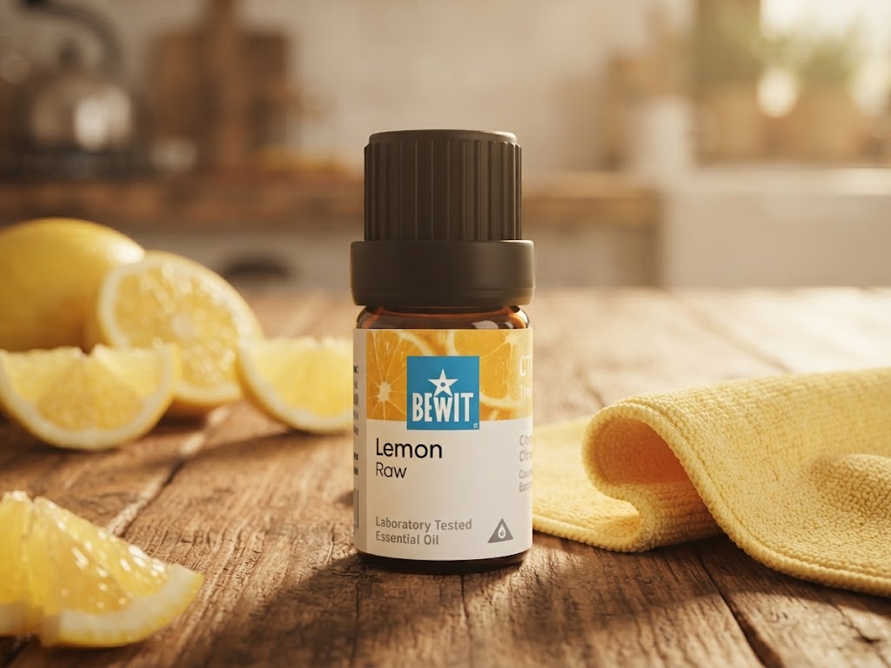

🌿 Lekce 25
úklid bez zbytečné chemie
Ukážu vám osm receptů na domácí úklidové prostředky — od univerzálního prášku po saponát na nádobí.

Běžné čisticí prostředky a osvěžovače vzduchu s umělými vůněmi vytvářejí v domácnosti prostředí, které naší pohodě moc nepomáhá. Prvním krokem je vyměnit chemické dezinfekční a antibakteriální prostředky za ty domácí. Druhým krokem je zahodit „osvěžovače" vzduchu a nahradit je esenciálními oleji. Pokud máte doma malé děti, dává výměna zdraví škodlivých čisticích prostředků smysl obzvlášť.
Tip: na výrobu čisticích prostředků můžete použít i hotovou směs esenciálních olejů BEWIT CLEAN HOME. Poznámka: 1 šálek je přibližně 2 dcl.
Jedlá soda a citrusové esence — na skvrny i vodní kámen.
Dvě varianty — rychlá s glycerinem, nebo tradiční z mýdla a sody.
Další lekce: Péče o rostliny — pokračovat →